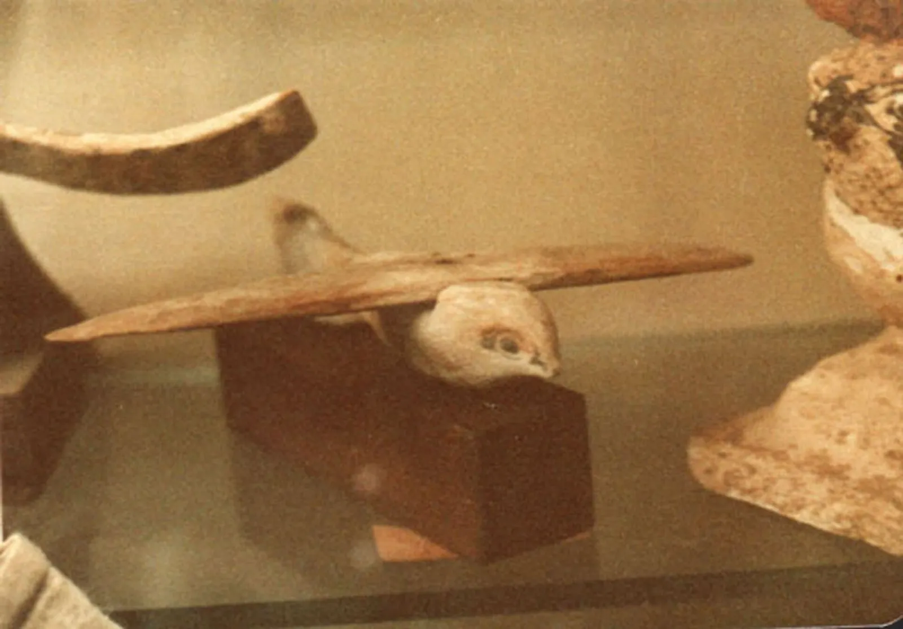

The Saqqara Bird: Did Ancient Egyptians Understand Flight?

In the Egyptian Museum in Cairo, a small wooden object sits in a glass case. Around it are the golden treasures of pharaohs and the painted coffins of nobles. The little object is only 18 centimeters wide from wing tip to wing tip, and it weighs just 39 grams. Someone carved it from sycamore wood about 2,200 years ago.
At first, it looks like a simple model of a bird. But look more closely, and the Saqqara Bird becomes a puzzle.
Its wings are straight and set at a sharp angle. They are not curved like the wings of a bird in flight. Its body is smooth and narrows to a point. Its tail stands straight up, like the tail fin of a modern aircraft. A real bird’s tail feathers spread out flat.
It has no legs. Some researchers say it looks strangely like a modern glider. A glider is an aircraft that flies without an engine.
The bird was found in 1898, when people dug out the Pa-di-Imen tomb at Saqqara. Saqqara is a necropolis. A necropolis is a very large ancient burial ground. Experts on ancient Egypt have suggested that the bird was a holy object, a child’s toy, or a weather vane.
But a small group of researchers feel strongly that it is much more. They say this carving shows that the ancient Egyptians understood how things fly. That would be many centuries before anyone was supposed to know.
Saqqara is one of the most important ancient sites in Egypt. The burial ground is about seven kilometers long. It lies about 30 kilometers south of Cairo. For more than 3,000 years, it was the cemetery of Memphis, the ancient capital.
The site holds the Step Pyramid of Djoser, built more than 4,500 years ago. It is part of the oldest large stone building complex known in history. There are also dozens of other tombs, temples, and underground halls.
The Pa-di-Imen tomb comes from the Ptolemaic period, around 200 BCE. At that time, Greek kings ruled Egypt. They were the family of Ptolemy, a general of Alexander the Great. The tomb belonged to a man named Pa-di-Imen. His name means “gift of Amun.”
The bird was written into the museum list as a simple bird figure. Then it was put away in storage, and few people noticed it for a long time.
The object is small enough to sit in the palm of your hand. It is made of sycamore wood. Its wings measure 18 centimeters (7.1 inches) from tip to tip. It weighs only 39.12 grams (1.38 ounces).
There is a hole in the underside. This shows that the bird was probably made to sit on a stick or pole. The wood has grown dark with age, and the surface shows the wear of thousands of years. But the carving is exact and careful. It looks like the work of a skilled craftsman.
That changed much later. Dr. Khalil Messiha was an Egyptian doctor. He looked closely at the object in the Egyptian Museum in Cairo. He became convinced that this was no ordinary bird. He believed it was a small model of a glider.
Messiha pointed to several things that made it different from other Egyptian birds. The wings are straight and angled downward.
The tail fin stands straight up from the body. Modern aircraft have a tail like that, but no known kind of bird does. The object also has no legs.
He went further. He said the shape of the bird matched the rules of modern aircraft design. He pointed to the wings and to its upright tail fin. His claims got a lot of attention, above all when books and films about ancient mysteries showed the Saqqara Bird.
A glider designer named Martin Gregorie studied the Saqqara Bird. He built copies and tested them as gliders. His results were clear. The bird, as carved, does not fly steadily.
A glider needs a small flat wing at the back, called a tailplane, to keep it steady. The Saqqara Bird has none. Without it, Gregorie’s copies tumbled in the air.
Gregorie then added a modern tailplane, which the ancient carving does not have. Only then did the copies glide in a steady way. Even so, they flew badly. They moved forward only about two and a half meters for each meter they dropped.
In 2023, researchers at the Institute of Aerospace Technology Bremen published a scientific study of the bird. First they made an exact 3D scan of the object. Then they used a method called computational fluid dynamics, or CFD. In CFD, a computer works out how air flows around a shape.
With these modern engineering tools, the team tested how the Saqqara Bird would behave in the air. Their results did not support the idea of an ancient aircraft.
The study found several problems with the claim that the bird is a working aircraft. First, its best glide ratio was low.
There was a worse problem. The object’s center of mass, its balance point, lies too far back. The bird could not keep its nose steady. If you launched it from a height, it would tip and tumble.
The computer test also showed that the lift was not the same on both wings. Uneven lift would make the bird roll over in flight.
The researchers gave their verdict. They wrote that their results are “not consistent with the suggestion that the Saqqara Bird demonstrates ancient knowledge of aerodynamics.”
If the Saqqara Bird is not a model aircraft, then what is it? Many experts think it was a holy object for ceremonies, perhaps in the shape of a falcon. Nobody knows for sure.
Falcons stood for gods in Egyptian religion, such as Horus. Horus was linked with kings and the sky.
There is another idea. The bird may have been a weather vane or a decoration on the mast of a sacred boat. Such boats were used in religious festivals, such as the Opet Festival.
Wall carvings in the Temple of Khonsu at Karnak show such boats. They come from the late New Kingdom. The hole under the Saqqara Bird was probably made to fix it on a stick or pole, and that fits this idea.
The Saqqara Bird is famous far outside the world of Egypt experts. The idea of an ancient flying machine fits the “ancient astronaut” idea. This idea says that visitors from space came to Earth long ago. The Swiss writer Erich von Däniken made it popular in his 1968 bestseller Chariots of the Gods?.
Von Däniken wrote that beings from other worlds shared advanced knowledge with early peoples. Almost all scientists reject this idea. Since then, the bird has often appeared in books and films about lost ancient technology.
Scientists have pushed back against this story. Kevin Desmond, a writer on the history of flight, found no evidence that the Egyptians built aircraft.
The Egyptians were skilled builders. They built the pyramids. But no evidence shows that they tried to build flying machines.
The real history of human flight begins much later. Abbas ibn Firnas lived in the 800s in Andalusia, in what is now Spain. He was a scholar of many subjects. Old stories tell of one of the first attempts by a person to fly. They say he made a flying device and jumped from a high place. The stories were written long after his death. Experts disagree about what he used. They say he was hurt when he landed.
The science of flight had to wait for Sir George Cayley. This English engineer is sometimes called the “father of aviation.” He is credited with naming the four basic forces of flight. They are weight, lift, drag, and thrust.
In 1903, Orville and Wilbur Wright made a powered and controlled flight on the Outer Banks of North Carolina.
The Saqqara Bird still catches the imagination, because it is so hard to put in one box. The truly interesting thing is not the claim about ancient flight. It is what the bird shows about the skill of ancient Egyptian craftsmen.
The object is carved from sycamore wood, and the work is careful. Its maker may simply have liked smooth shapes.
The Saqqara Bird also teaches a useful lesson. Looking like something is not the same as being it. An ancient object may look like a modern machine. That does not mean it worked like one. Science has shown this again and again, from Gregorie’s test copies to the CFD study of 2023. The Saqqara Bird, as carved, cannot fly steadily.
Today the Saqqara Bird is in the Egyptian Museum in Cairo. This small wooden carving has won a fame that its maker could never have imagined. And one question stays open. What did the carver mean it to be?
References & Further Reading
Wikipedia: George Cayley — Father of aviation, the four forces of flight
US National Park Service: The First Flight — The Wright brothers' powered flight in 1903
Editorial note: The bird is real, from about 200 BCE, and it cannot fly as carved. Nobody knows what it was made for, and experts only offer ideas such as a falcon figure, a toy, or a mast ornament. See our Editorial Policy.